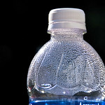

High Priority
- Complete web development course.
- Write up five-chapter piece on some what-if scenario (commissioned).
- Draw up line-art as practice for drafting website assets.
NOTE: No images available for any of these.
In no particular order:
Start earphone factory here.
"Headphones iPhone 3G S 32GB, schwarz" by renatomitra is licensed under CC BY-SA 2.0 

 .
.
Drink plenty of water; buy it from here.
"water bottle" by Muffet is licensed under CC BY 2.0 
 .
.